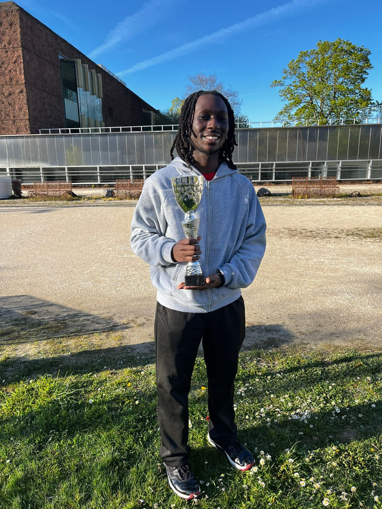
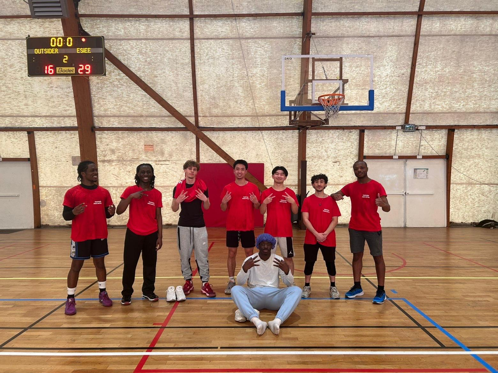

Sport collectif · Capitaine depuis 2015 · Cotonou & Île-de-France
Basketball : exigence collective et conduite d’équipe
Je pratique le basketball depuis plus de dix ans, en club comme en compétitions scolaires et universitaires. Endosser le rôle de capitaine d’équipe depuis 2015 a façonné ma manière d’aborder la coopération, la communication et la prise de décision en groupe.

Parcours sportif
Dix ans de pratique entre le Bénin et la France
Mon parcours sur les terrains s’est construit dans des environnements variés, qui ont chacun renforcé ma capacité d’adaptation :
- À Cotonou (Bénin) : pratique en club et au sein des équipes de l’EFE Montaigne, ponctuée par plusieurs victoires lors de tournois nationaux inter-établissements en tant que capitaine.
- En classes préparatoires (Paris) : maintien d’une pratique régulière au lycée Saint-Louis pour équilibrer l’exigence académique et conserver un ancrage collectif.
- À ESIEE Paris : engagement dans l’équipe de l’école, participation aux championnats et tournois universitaires en Île-de-France.
Rôle de capitaine
Fédérer, ajuster et garder le cap sous pression
Jouer au poste de meneur de jeu, et assouvir la responsabilité de capitaine, m’a appris à jouer un rôle d’interface entre l’entraîneur et les coéquipiers, mais aussi à maintenir la cohésion du groupe dans les moments décisifs d’un match ou d’un tournoi.
Ce rôle rejoint directement ce que je recherche en conduite de projets d’ingénierie : clarifier l’objectif commun, s’appuyer sur les points forts de chacun, communiquer avec calme lorsque le rythme s’accélère et assumer les choix collectifs jusqu’au résultat.
Sur le terrain
Moments de compétition et d’équipe

